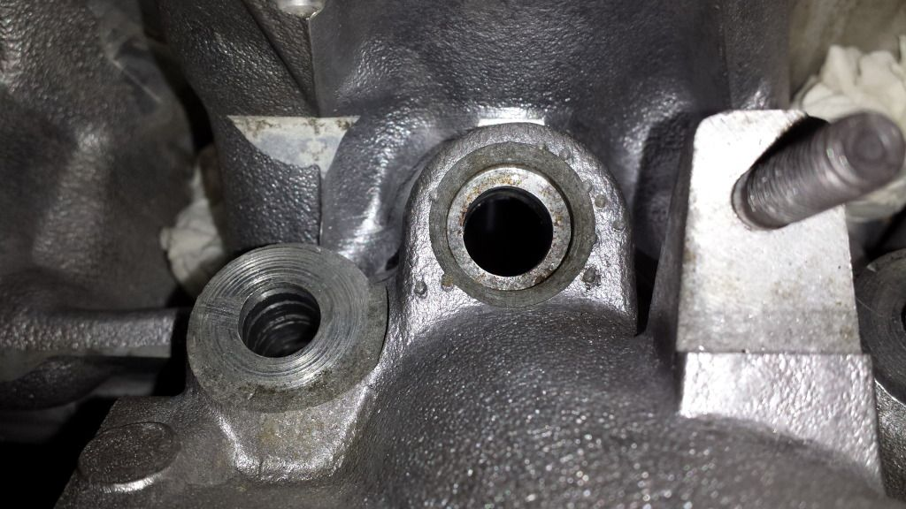
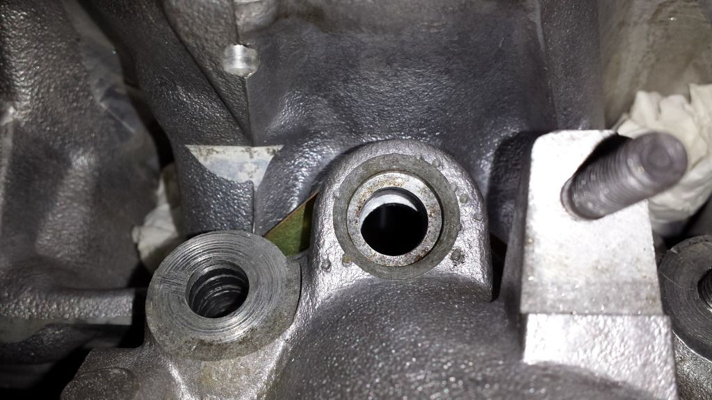

-
30 LIM can use matching injectors, 33 LIM must use matching style - the diameter is different for injector O-ring seal. easiest/ideal 33 set up is short block only.Originally posted by 300zxturboftw View Post
gasket for LIM to a/b-W-OWO heads all line up the same.
Quality is the difference. Victor Reinz, Beck Arnley, and similar class of gaskets mfg's run the multilayer metal with rubber gaskets around the coolant passages. I've seen the Fel-pro are pressed paper, big loss of qulaity and difference from original style gasket. -
the lower intake is 30. using Victor Reinz gaskets I believe, as they are the metal with a plastic/rubber liner of the holes. like stock.Damn dirty angels....these cars!
Current Daily Driver - 86 Turbo.
Under the cover - THE BANANA… that needs to be re-energized.
sigpic -
They were FelPro intake gaskets. Victor Reinz head gaskets. And yes, I'm running all VG30 parts besides the heads themselves.Originally posted by Axel kain View PostPrius… because Pretentious wouldn't fit across the back of the car…
Cheap, Fast, Reliable - pick any two
My 1986 Turbo Build -
*and valve springs, cams…Damn dirty angels....these cars!
Current Daily Driver - 86 Turbo.
Under the cover - THE BANANA… that needs to be re-energized.
sigpic -
Yeah, but they don't have anything to do with how the pieces go back together.Originally posted by Axel kain View PostPrius… because Pretentious wouldn't fit across the back of the car…
Cheap, Fast, Reliable - pick any two
My 1986 Turbo Build -
This is what I was referencing. All my air ports line up pretty well, but here's the drivers side injector hole:

Here's passenger side:

Talking very very small amounts to be machined, which I actually had done. Helped a tiny bit but still off. I know someone else mentioned they had the same issue. It really shouldn't effect things too much as the spray should be well in the cylinder before catching that edge.Usual Z31 suspect: Garage Queen (aka broken)

-
where's the gasket in that first picture though?Damn dirty angels....these cars!
Current Daily Driver - 86 Turbo.
Under the cover - THE BANANA… that needs to be re-energized.
sigpic -
Sorry…that's the same side. They line up with out the gasket showing how much material needed to be taken off to line up. Didn't make much sense considering it was like .050 or something ridiculous. Machined off .020 and it cuts in to the injector ports. Kind of confused as what to do next other than something custom…which is silly considering everything else that has to connect.Usual Z31 suspect: Garage Queen (aka broken)
-
As long as the gasket seals around the part you can't see, you can safely remove the visible part -- though I do realize this will be a challenge without pulling the head -
Could just make sure the valve is closed then drill it like it is, pull the LIM off and vacuum/blow out the shavings.http://z31performance.com/showthread…2-2-(-now-NA2T
My build thread (: -
We'll see if i have issues while tuning. I'm going to put some boost into the car on wednesday.Usual Z31 suspect: Garage Queen (aka broken)
-
I honestly didn't even check that on mine, but it's running fine, so I'm not worried about it. If I take things apart again I'll take a look though.Prius… because Pretentious wouldn't fit across the back of the car…
Cheap, Fast, Reliable - pick any two
My 1986 Turbo Build -
You need the thinner style gasket. -
Nope, Already tried it.Originally posted by got boost? View PostUsual Z31 suspect: Garage Queen (aka broken)
-
I noticed this years ago. I even brought it up when I was making custom lower intake flanges, that kind of mis alignment also tells me that your ports don't match well either and you could be losing a few ponies. A miniscule amount but, definitely something funky going on. I am thinking the vg33 manifolds were cut less than the early 30 manifolds. It might be worth measuring the heights of your ports next time you have the LIM off and seeing where your parts currently are at, machined wise."Its the s12's sexy over weight step daughter, the z31"

Copyright © 2006–. All rights reserved. Privacy Policy